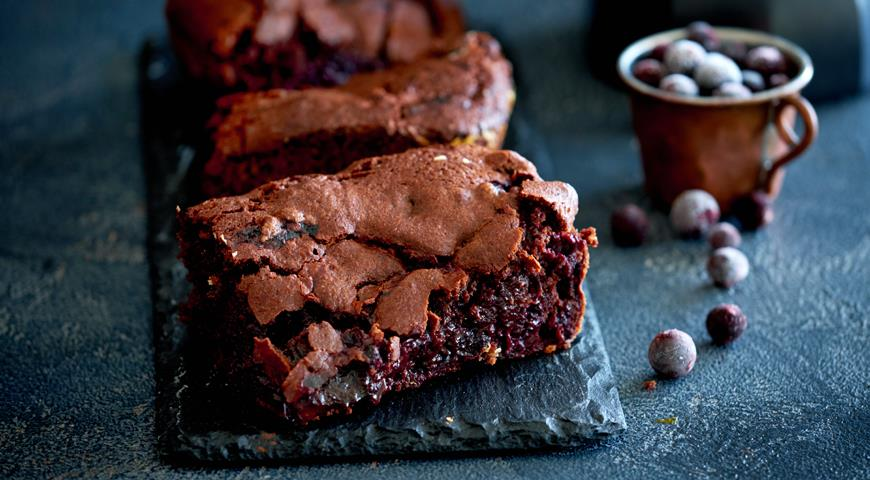
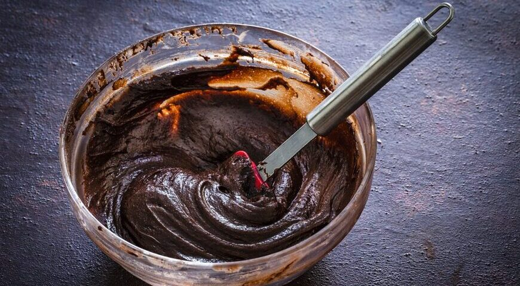

The BEST brownie recipe! With crispy edges, fudgy middles, and rich chocolate flavor, these homemade brownies will disappear in no time. Super fudgy and dense cocoa brownies are gooey on the inside, have a crinkly top, and are made with just 6 ingredients in under 30 minutes! This easy recipe makes the BEST brownies and is the only brownie recipe you will ever need.
That’s it! These fantastic homemade brownies are so easy. ’ve got a super-easy yet DELICIOUS fudgy brownie recipe for you today. Brownies can’t get any fudgier or easier to make than this folks!
Recipe Ingredients:
- 1 - 1/2 cups granulated sugar
- 3/4 cup all-purpose flour
- 2/3 cup cocoa powder, sifted if lumpy
- 1/2 cup powdered sugar, sifted if lumpy
- 1/2 cup dark chocolate chips
- 3/4 teaspoons sea salt
- 2 large eggs
- 1/2 cup canola oil or extra-virgin olive oil
- 2 tablespoons water
- 1/2 teaspoon vanilla
Time
|
|
|
|
|
|
|
|
|
|
|
|
Instructions:
- 1. Preheat the oven to 325°F.
- 2. Lightly spray an 8x8 baking dish (not a 9x9 dish or your brownies will overcook) with cooking spray and line it with parchment paper. Spray the parchment paper.
- 3. In a medium bowl, combine the sugar, flour, cocoa powder, powdered sugar, chocolate chips, and salt.
- 4. In a large bowl, whisk together the eggs, olive oil, water, and vanilla.
- 5. Sprinkle the dry mix over the wet mix and stir until just combined. 
- 6. Pour the batter into the prepared pan (it'll be thick - that's ok) and use a spatula to smooth the top.
- 7. Bake for 40 to 48 minutes, or until a toothpick comes out with only a few crumbs attached (note: it's better to pull the brownies out early than to leave them in too long).
- 8. Cool completely before slicing.
- 9. Store in an airtight container at room temperature for up to 3 days. These also freeze well!
Notes:
*If you'd like to reduce the sugar, I've had success with 1 cup granulated sugar instead of 1 1/2 cups.
*I like to use olive oil because it's what I keep on hand and I enjoy the pairing of olive oil with chocolate. Keep in mind that you will taste it here. For a more neutral flavor, use canola oil.
*When these brownies come out of the oven, they'll be super gooey in the middle. Allow them to cool completely, about 2 hours, before you slice into them to give them a chance to set up. They'll continue to firm up the longer they're out of the oven. If you still prefer a firmer brownie, store them in the fridge.
History of Brownie More bownies's details Another recipes